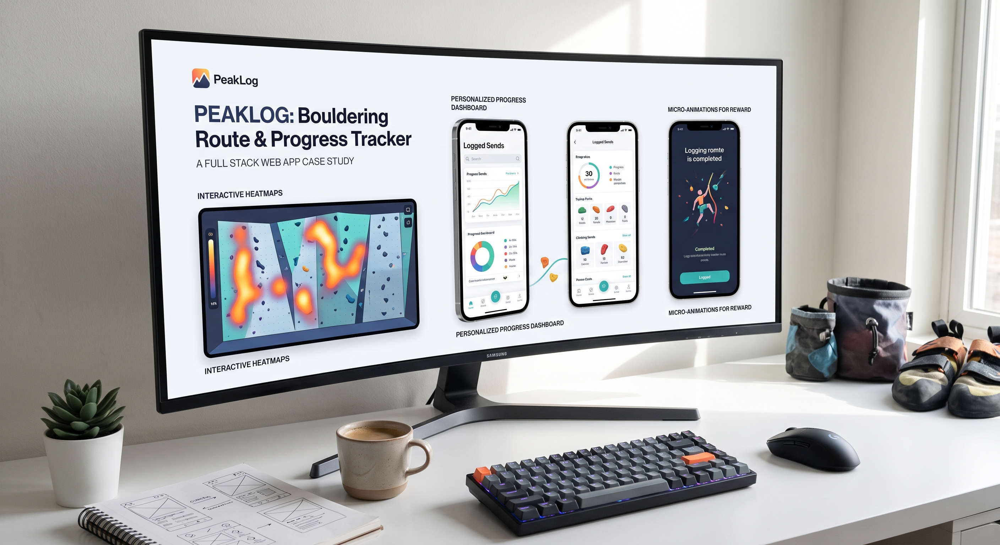
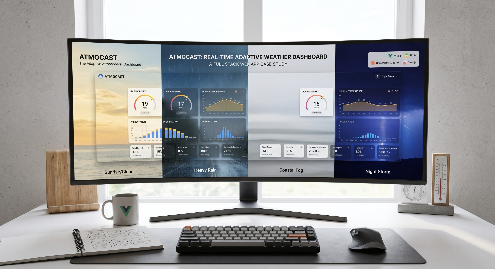
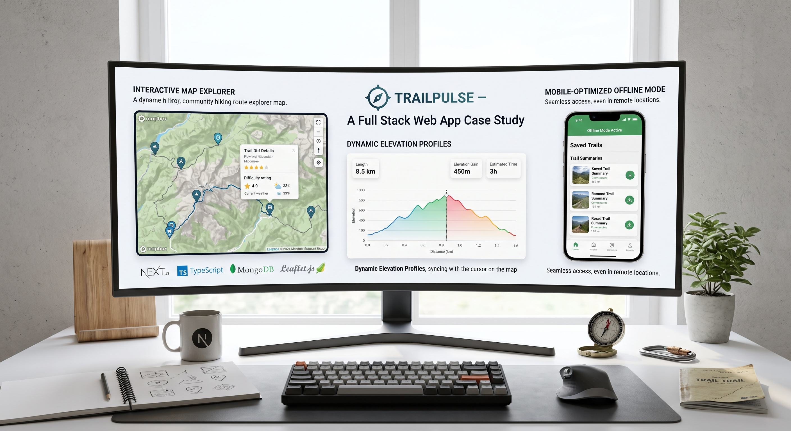
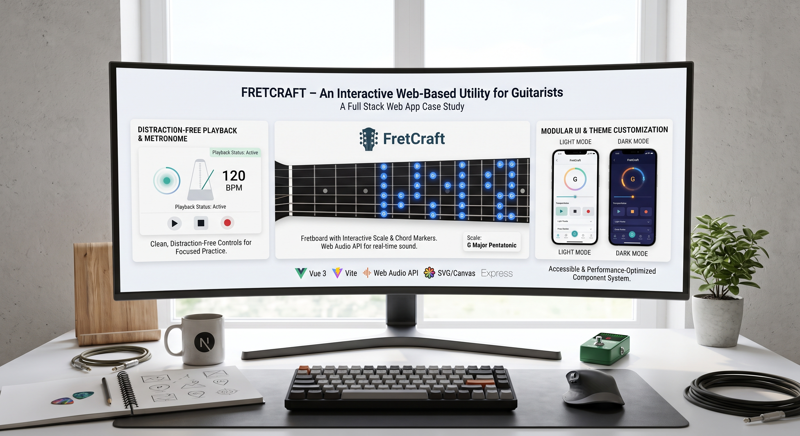

About Me
Contact
Projects

PeakLog – Bouldering & Route Tracker App
What it is: A mobile-first web app designed for indoor climbers to log completed routes, track grading progress over time, and view heatmaps of their most frequent wall styles.
Tech Stack: React, Node.js, Express, PostgreSQL, Tailwind CSS, Framer Motion.
UI/UX Highlights:
- Interactive canvas allowing users to tap holds on virtual climbing walls.
- Micro-animations for logging "sends" and achieving personal milestones.
- High-contrast dark mode designed for easy viewing under gym lighting.

AtmoCast – Real-Time Atmospheric Weather Dashboard
What it is: A minimalist weather dashboard integrating multiple weather APIs to visualize micro-climates, UV indexes, and hourly forecasts with fluid visual feedback.
Tech Stack: Vue.js, Pinia, OpenWeatherMap API, Tailwind CSS, Chart.js.
UI/UX Highlights:
- Dynamic background themes that morph seamlessly based on real-time local conditions (sun, rain, fog).
- Smooth, draggable card layouts and responsive metric widgets.
- Fast load times optimized with client-side caching.

TrailPulse – Community Hiking Route Explorer
What it is: A full-stack platform where outdoor enthusiasts share trail difficulty ratings, real-time weather advisories, and elevation profiles.
Tech Stack: Next.js, TypeScript, MongoDB, Leaflet.js (Mapbox), CSS Modules.
UI/UX Highlights:
- Custom interactive map pins with quick-preview cards on hover.
- Dynamic elevation profile charts that sync with the map cursor location.
- Mobile-optimized offline mode for viewing saved trail summaries.

FretCraft – Interactive Chord & Tab Visualizer
What it is: A web-based utility for guitarists to practice scales, build chord progressions, and hear real-time audio playback using the Web Audio API.
Tech Stack: Vue 3, Vite, Web Audio API, SVG/Canvas rendering, Express.
UI/UX Highlights:
- Animated fretboard with interactive markers that light up to show scale shapes.
- Clean, distraction-free playback controls with responsive metronome visualizer.
- Custom light/dark themes tailored for stage or bedroom practice.